TML
Cipango.
Identidad · Manual · Reels · Brochure · Tokio–Lima · 東京・リマ
Un proyecto que empezó con la identidad y hoy es un sistema de marca completo para una empresa de turismo en Japón hecha por y para hispanohablantes: identidad bicultural, manual de marca, reels para redes y brochure corporativo. La voz de un peruano que lleva 35 años viviendo en Japón y guía a viajeros hispanos dentro del país.

Una marca que no traduce Japón.
Lo cuenta.
El turismo hispanohablante en Japón está dominado por agencias locales que ofrecen tours "en español" guiados por japoneses con dominio aproximado del idioma. Carlos es peruano, lleva 35 años en Japón y guía viajeros hispanos como un par — no como traductor. El reto era construir una identidad que comunicara esa diferencia sin caer en los clichés visuales del Japón postal, y que funcionara igual de bien en redes sociales y en piezas impresas.
Cuatro piezas.
Una sola marca.
Identidad aplicada.


Un manual para que la marca se sostenga sola.
El primer año dejó muchas decisiones tomadas en la práctica. El manual las convierte en reglas: quién es TML Cipango, cómo se ve y cómo habla, en un documento que cualquier persona puede aplicar —un diseñador externo, una agencia aliada o quien edita los videos— sin tener que preguntar.
- Extensión
- 31 páginas · A4
- Contenido
- 24 secciones
- Bloques
- Marca · Identidad visual · Color y tipografía · Sistema y aplicaciones
- Versión
- 1.0 · 2026
- Idioma
- Español
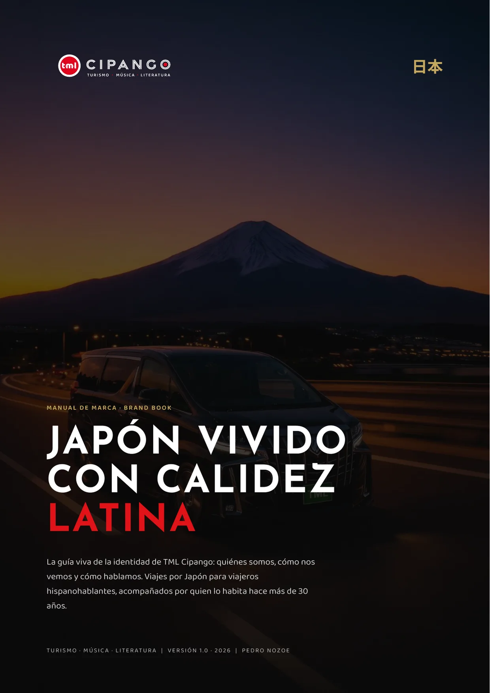
«El rojo nunca ocupa más del 5 % de la superficie visible. Su escasez es exactamente lo que le da fuerza.»
Manual de marca · La regla del 5 %
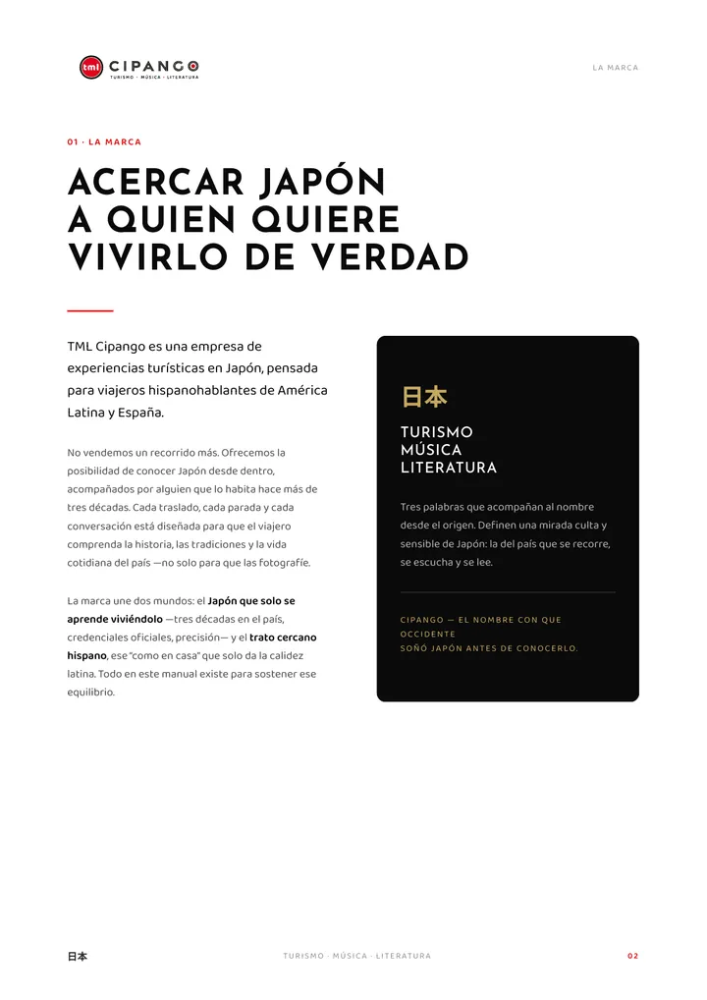
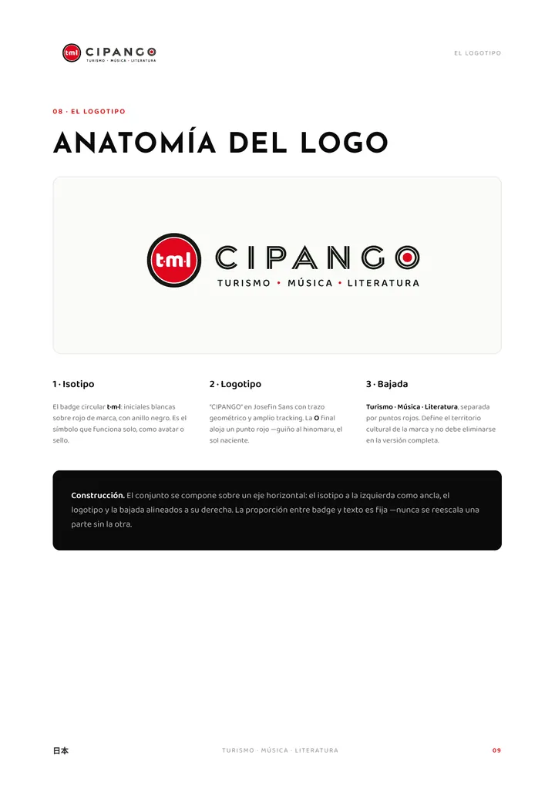
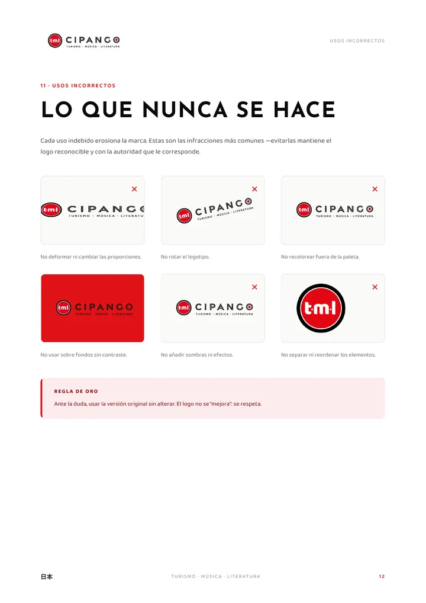
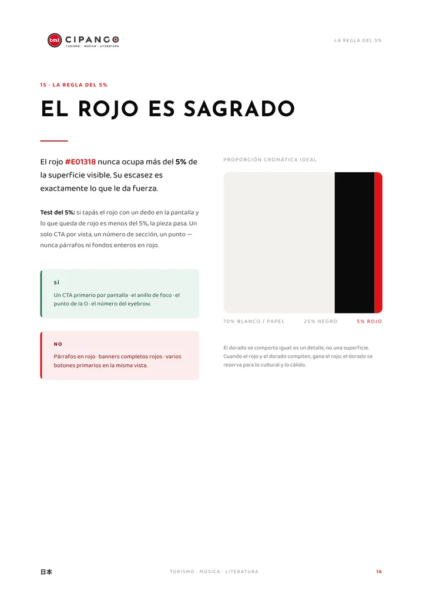
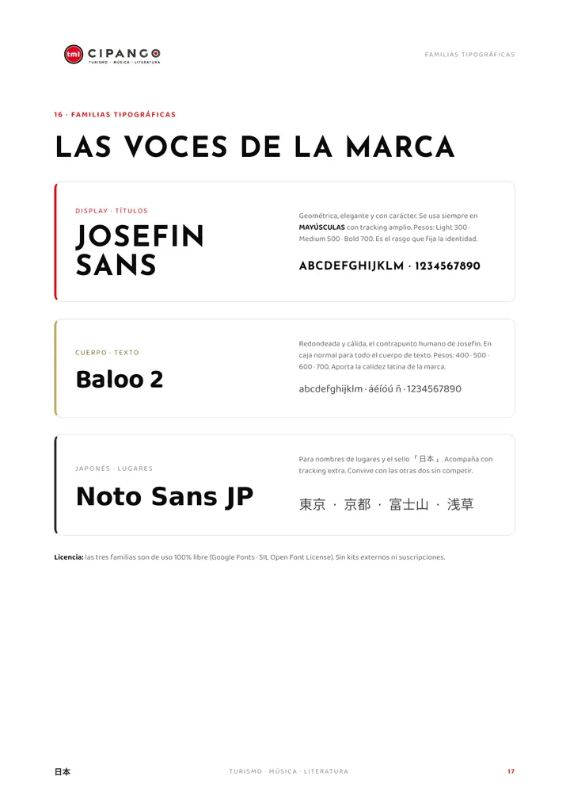
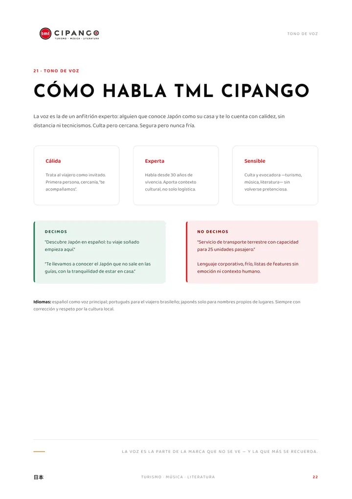
Los reels que
hicieron crecer la marca.
El video vertical ha sido clave para el posicionamiento y el crecimiento de TML Cipango. Cada reel cuenta un destino de Kanto que casi no aparece en las guías, en español y con la marca presente de principio a fin. Guion, edición y dirección visual de Nozoe Studio.
- Vertical 9:16
- Hasta 30 s
- TikTok · Instagram
Del chat
al papel.
Antes del brochure, TML Cipango se presentaba solo por WhatsApp, y cada explicación se armaba mensaje por mensaje. El brochure reúne esa conversación en doce páginas —quiénes son, qué servicios ofrecen, la flota y los destinos que pocos conocen— para dos lectores a la vez: agencias de viaje de Hispanoamérica y turistas que planean su viaje.
- Extensión
- 12 páginas · A4
- Lectores
- Agencias y turistas
- Flota
- 5 vehículos, de 5 a 40 pasajeros
- Destinos
- 8 lugares exclusivos en Kanto
- Enfoque
- Servicios, flota y destinos · Sin precios ni paquetes
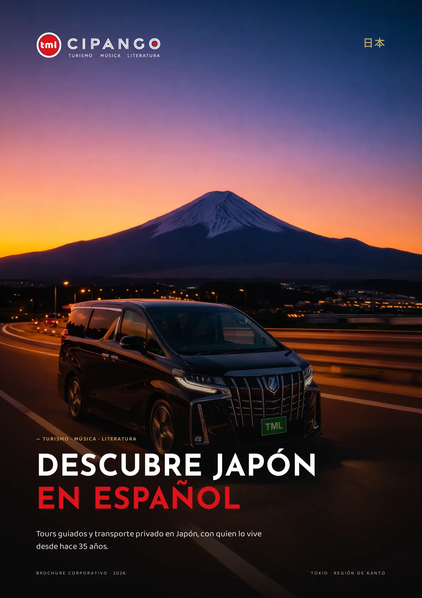
«Somos hispanohablantes nativos que pensamos como tú.»
Brochure corporativo · Frase de marca
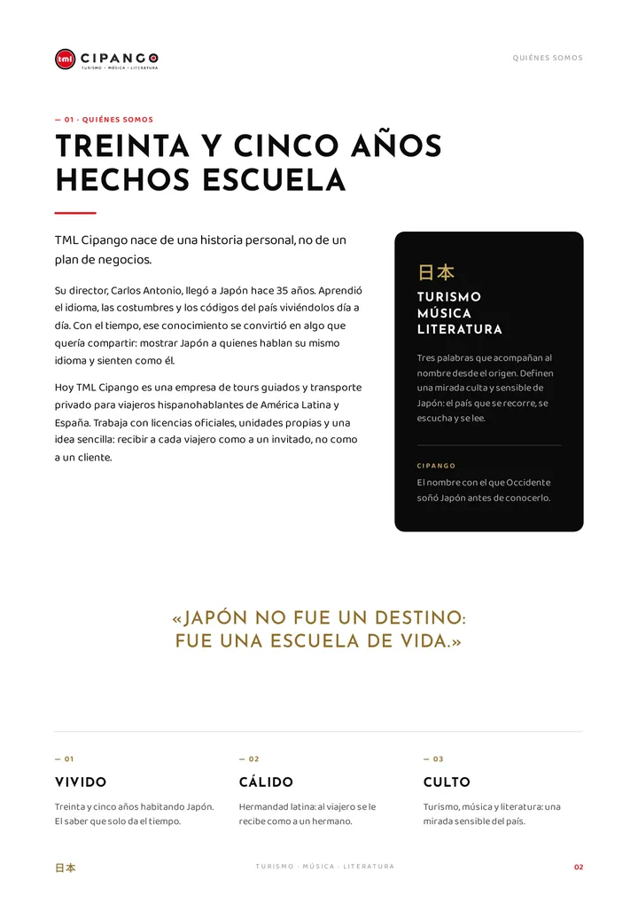
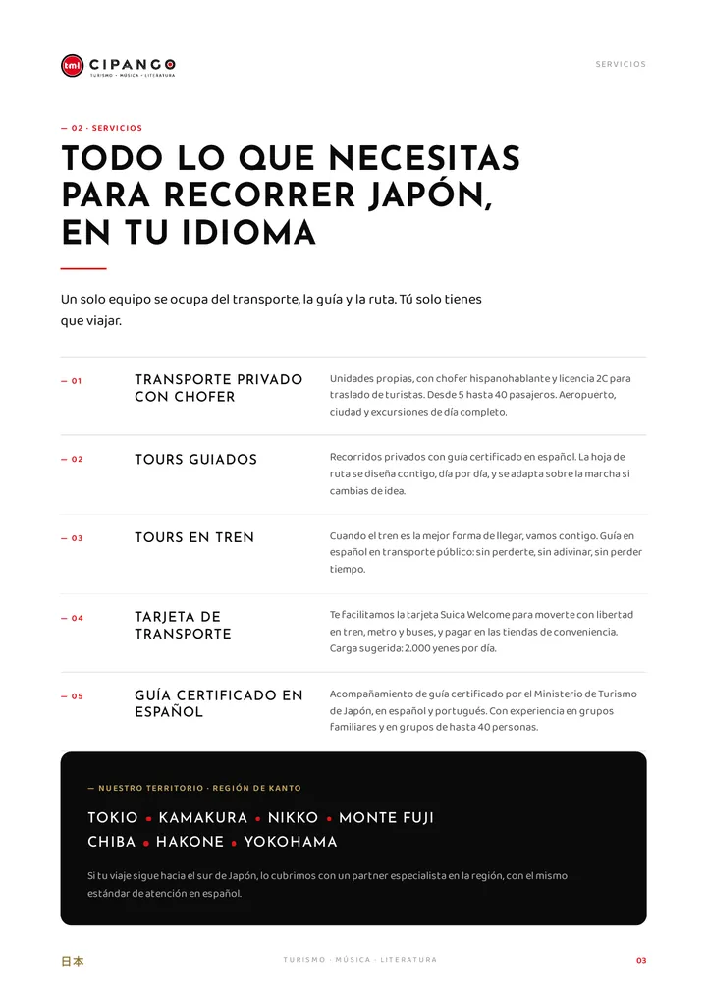
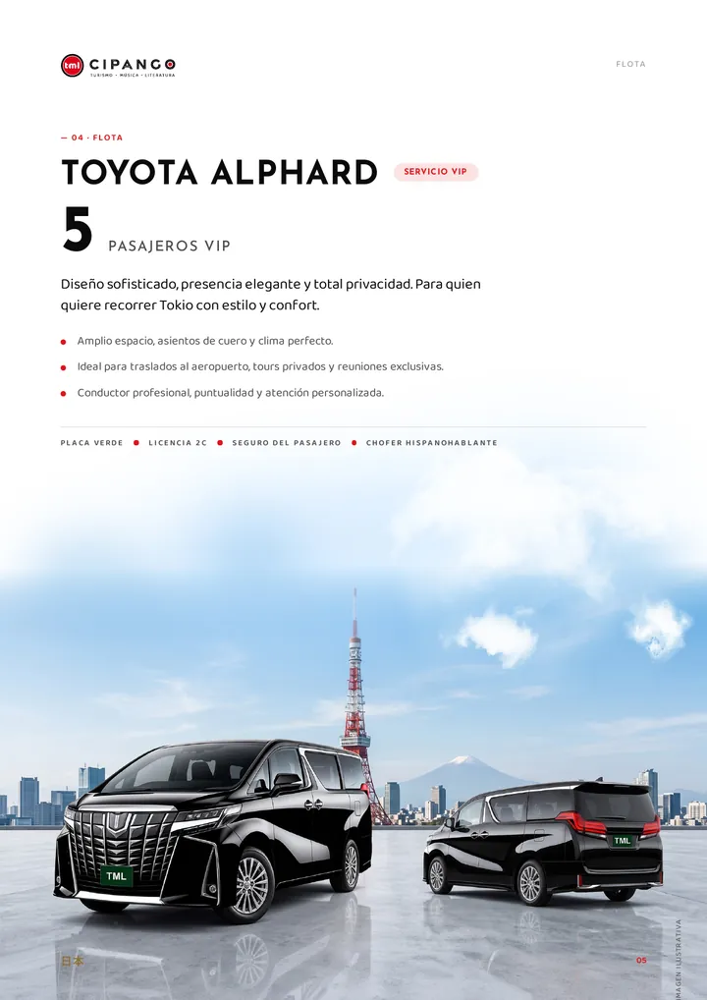
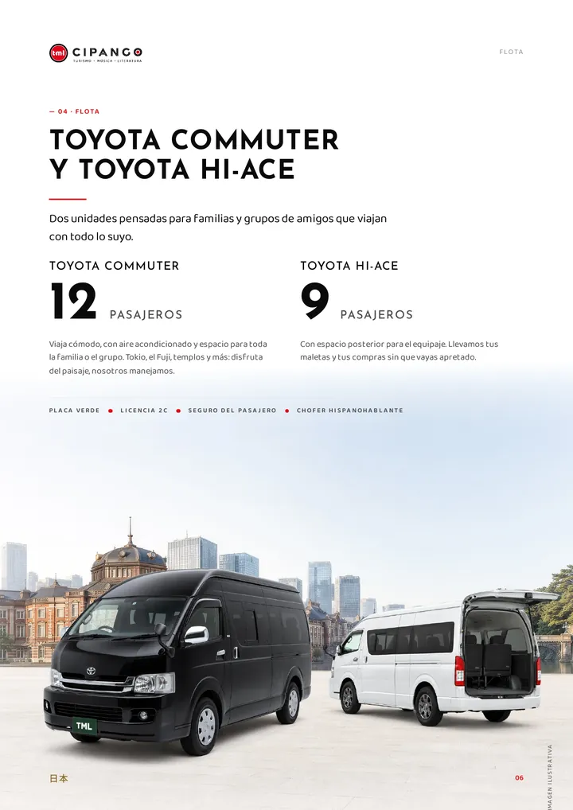
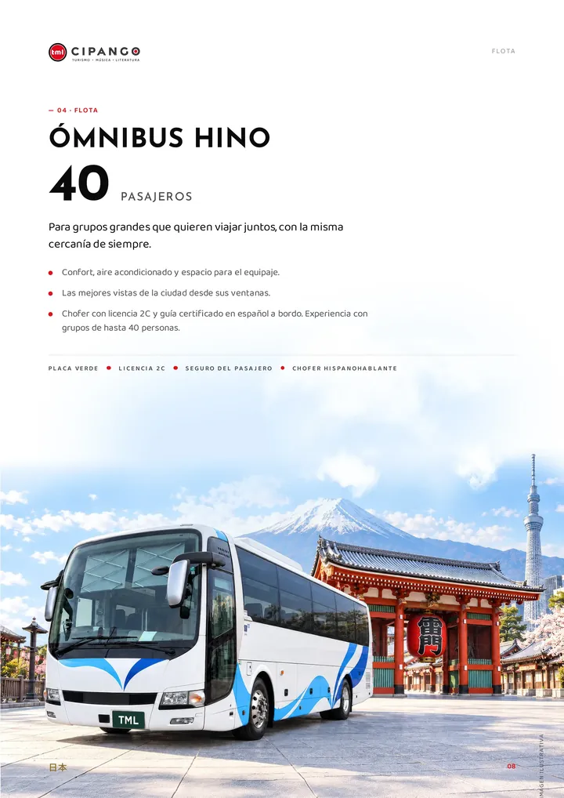
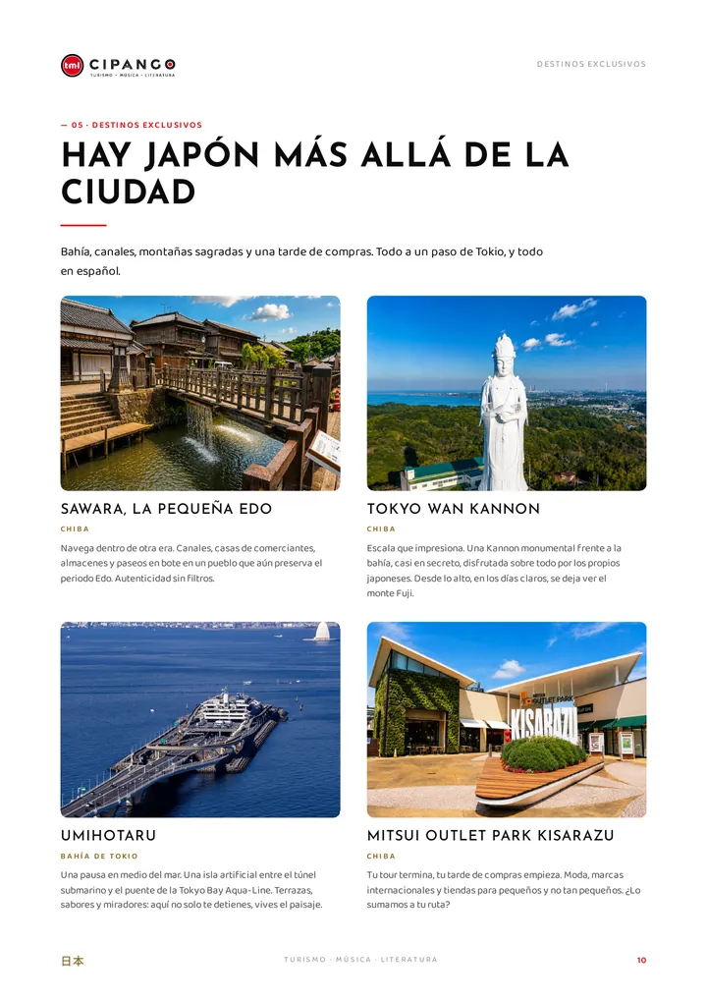
Hablemos.
30 minutos, sin compromiso. Te digo si puedo ayudarte o te recomiendo a alguien que sí.
Mi proyecto se parece al de TML.
Cuéntanos los detalles y lo aterrizamos.
De acuerdo, te llamo en 30 minutos